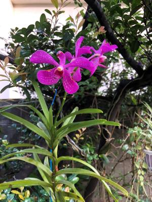

うるがいの話 ある日
最新: ロゼッタ・ストーン【うるがいの話 ある日】とは 一日だけのプログです
『うるがいの話』の最新一日だけのプログで、通信料が少なく経済的だ。カニの画像をクリックすると全ての日付が載る『うるがいの話』サイトを表示します
|
|
【うるがいの話】 うるがい(ｳﾙｶﾞｲ urugai)とは、『もずくがに』の名前でとても大きくなります。 |
|---|---|
|
|
【カミマヤーの話】 猫のことを方言でマヤーといいます。カミマヤー（kamimayaa）とは、神の猫のことです。 |
|
【たながぁの音楽】 たながぁ（ﾀﾅｶﾞｰ tanagaa）とは手長えびのことで、何種類かあり大きいのは車 エビぐらいになります。 |

|
【ぶながぁの話】 ぶながぁ(ﾌﾞﾅｶﾞｰ bunagaa)とは、赤い髪の毛、赤い身体、そして身長は１ｍ２０ｃｍ ぐらい、川の蟹を食べているの目撃された。場所は沖縄県国頭郡大宜味村のと ある村僕の隣近所に住んでいる爺さんから、聞いた話です。 |
|
|
【ギーマの話】 ギーマ(giima)とは、山原の里山に咲くスズランに似た、 花を付けます。実は食べられます、 気が付くと口の周りが紫になっています。 |
2022年09月18日 (日）ロゼッタ・ストーン
16:40
「貴田庄の西洋の書物工房―ロゼッタ・ストーンからモロッコ革の本まで」
三段にわかれ、それぞれヒエログリフ(聖刻文字)、デモティック(民衆文字)、
古代ギリシャ文字の三種類の文字によって、三つの文章が刻まれていた。下段
に刻まれたギリシャ文字による文章のなかにあったクレオパトラやプトレマイ
オスという文字を手がかりに、シャンポリオンがロゼッタ・ストーンの解読に
成功したのが一八二二年のことである。
「近藤龍一の１２歳の少年が書いた 量子力学の教科書」より
イギリスのトーマス・ヤング(・・・ロゼッタストーンの解読をしたシャンポ
リオンにも大きな影響を与えた)
二つの本を並行して読んでいたら、量子力学の本にロゼッタストーンの文字が
出て来たのにドキっとする。シンクロというらしいが、。朝、庭に出ると玄関
の植木鉢が倒れたり、車のカバーが剥がされているのと少し驚く。以外に風が
強かった、これから九州は大変だろうなと思っているところに、台湾の地震の
影響で、与那国や宮古に津波警報が出されている。

１６時３０分 ビットコインの総資産 ￥８、３０４↑